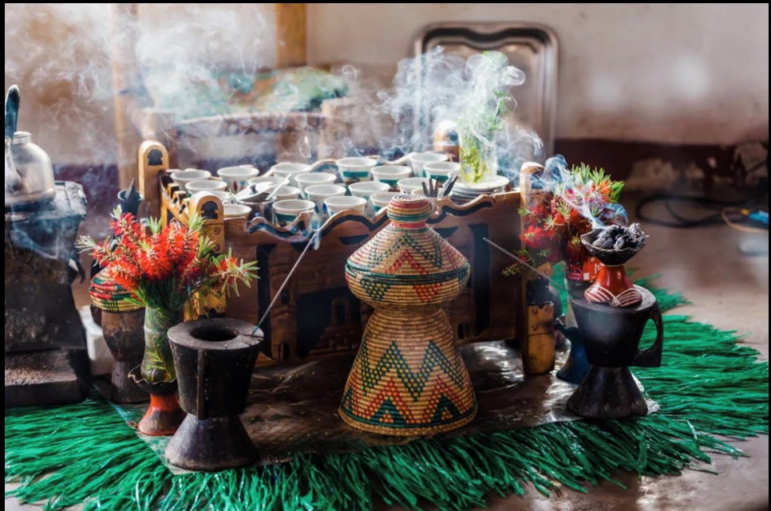

One of the first established Christian organizations in the world is the Ethiopian Orthodox Church. The church has always held a privileged position in Ethiopian politics and society. According to legend, coffee first appeared in Ethiopia, an African nation. A significant aspect of Ethiopian culture is the coffee ceremony. Coffee beans are first roasted, then boiling coffee is made. It is a show of esteem and friendship to be asked to a coffee ceremony, which is regarded as the most significant social event in many communities.